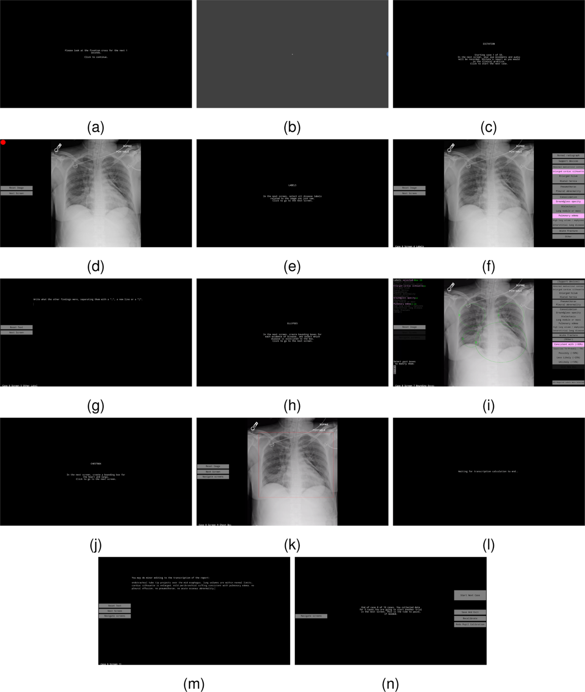

학습할 때만 gaze 사용
gaze로 모델의 attention을 유도한 뒤, 추론 시에는 X-ray만 입력합니다.
Project 01 · Medical AI · Active
방사선과 의사가 흉부 X-ray를 판독하며 남긴 시선과 발화를 test-time 입력으로 정렬해, 언급된 이상소견의 위치를 예측합니다.
One-minute brief
영상만 보고 병변을 찾는 모델이 아니라, 새 사례의 gaze scanpath와 timestamped report를 추론 입력으로 받아 finding별 위치를 grounding합니다.
“small right pleural effusion at the base”
Output finding과 연결된 fixation의 실제 좌표를 attention weight로 다시 합쳐 오른쪽 하부 후보 영역을 만듭니다. 문장과 영상은 개념 설명을 위한 합성 예시이며 실제 환자 기록이 아닙니다.
gaze로 모델의 attention을 유도한 뒤, 추론 시에는 X-ray만 입력합니다.
새 사례를 추론할 때 해당 판독에서 얻은 gaze와 report를 함께 사용합니다. 미래 gaze를 차단한 진짜 streaming 평가는 후속 gap입니다.
Concept primer · 01
eye tracker가 측정한 원시 좌표는 눈의 움직임을 해석한 결과가 아닙니다. 분석 단위가 바뀔 때 보존되는 정보와 버려지는 정보도 달라집니다.
(x, y, t)와 pupil·window 상태입니다. REFLACX raw gaze는 초당 1,000회 기록되지만 결측, blink, calibration 오차도 포함합니다.
가까운 위치에 일정 시간 안정된 sample을 하나의 사건으로 묶습니다. 중심 좌표와 시작·종료 시각, 지속시간을 가집니다.
보존: dwell · 손실: saccade 안의 세부 궤적fixation 위치에 Gaussian kernel을 쌓아 “많이 본 곳”을 나타냅니다. 순서와 발화와의 시간 관계는 사라집니다.
보존: where · 손실: when, orderfixation을 시간순으로 연결합니다. 같은 heatmap이라도 “병변을 먼저 발견한 경우”와 “나중에 재확인한 경우”를 구분합니다.
보존: order · 과제: 길이와 개인차정상 구조 확인, 탐색, 재검토, 놀람도 fixation을 만듭니다. 따라서 gaze는 병변의 정답 mask가 아니라 후보 위치를 좁히는 noisy evidence로 다뤄야 합니다.
Concept primer · 02
정면 흉부 X-ray는 환자와 마주 보는 것처럼 표시됩니다. 따라서 영상의 왼쪽은 대개 환자의 오른쪽입니다. “right lower lung”, “left base”, “above the hilum” 같은 발화는 단순한 단어가 아니라 영상 좌표를 제한하는 관계입니다.
환자 기준 좌우. 영상 표시 방향과 혼동하면 좌표가 수평 반전됩니다.
절대 pixel 값보다 lung/chest box 안의 상대 위치로 정규화하는 편이 견고합니다.
두 anatomy 사이의 관계이므로 단일 분류 token보다 구조화된 제약이 필요합니다.
촬영 방향에 따라 심장 확대와 구조 겹침이 달라집니다. projection을 보조 변수로 둡니다.
이 페이지는 모델링에 필요한 영상 좌표·언어 개념만 다룹니다. 임상 판독 지침이 아닙니다.
REFLACX · synchronized evidence
REFLACX는 5명의 흉부영상 전문의가 2,616개 고유 CXR을 판독해 만든 3,032개 gaze 포함 record를 제공합니다. 영상은 MIMIC-CXR에서 연결합니다.


timestamped transcript는 판독 중 생성된 관찰 기록이고, pathology ellipse와 certainty는 판독 뒤 별도로 만든 검증 annotation입니다. ellipse도 pixel-perfect mask가 아니며 판독자 간 변이가 있습니다.
PR #3 · current hypothesis
발화는 시각적 발견보다 늦게 나옵니다. 하지만 그 지연은 소견, 문장 구조, 판독자마다 다를 수 있어 하나의 1.5초 규칙으로 고정하기 어렵습니다.
B0 · No gate
Lanfredi 문헌 0.165, 팀 재현 0.167로 평가 프로토콜의 fidelity를 먼저 확인했습니다.
B1 · Fixed gate
고정된 look-back window를 쓰는 직접 문헌 baseline입니다. 최종 동일 run에서는 IoU 0.2082입니다.
Ablation · Temporal
position을 attention key에서 빼고 시간·운동 특징만으로 관련 fixation을 고릅니다.
Final
raw x,y와 공간·심각도 descriptor를 cross-attention으로 결합하고 실제 fixation 위치만 splat합니다.
Preliminary evidence
PR #3의 최신 technical spec은 B1, RadZero, Temporal-only, Final과 두 information-removal control을 같은 1,093개 test instance에서 평가합니다. Final은 Temporal-only와 B1보다 높고, 외부 image-text 모델 RadZero보다 IoU는 높으며 Pointing은 통계적으로 동률입니다.
겹친 면적 ÷ 합집합 면적예측 영역과 reference ellipse가 얼마나 겹치는지 봅니다. 작은 병변에는 위치가 조금만 빗나가도 크게 감소합니다.
예측 peak ∈ reference region가장 강한 예측점이 병변 안에 들어가는지 봅니다. 영역의 크기·모양 품질은 충분히 평가하지 못합니다.
시간만 사용하는 attention보다 위치·언어를 함께 사용한 attention이 낫고, position shuffle 붕괴는 실제 fixation↔position 대응이 효과를 만든다는 강한 근거입니다. 공간 단어 효과는 IoU에서 5/5 seed 유지되지만 Pointing에서는 2/5 seed만 유의하므로 더 약하게 주장해야 합니다.
Implementation direction
PR #3의 작은 정렬 구조와 해석 가능한 출력은 유지하되, 미래 fixation을 차단한 조건에서도 무엇이 성능을 만드는지 드러나게 합니다.
현재 모델의 cross-attention과 splat head는 유지하되, phrase가 완성된 시점 이전의 fixation만 key bank에 넣습니다. 먼저 모델 재학습 없이 causal replay로 성능 손실과 필요한 look-back horizon을 확인합니다.
모든 단어마다 위치를 예측하지 않고 pathology mention이나 공간 구절이 완성될 때만 grounding합니다.
하나의 최적 lag를 고르지 않고 여러 과거 구간에 attention을 분배합니다.
RadZero와 Final의 per-instance 오류가 다를 때만 image heatmap 결합을 진행합니다.
gaze와 language가 충돌하거나 근거가 약하면 억지로 병변을 표시하지 않습니다.
실제 병변과 겹치는 fixation만 oracle로 골랐을 때도 IoU가 낮다면, alignment 모델보다 gaze 자체의 공간 해상도와 ellipse 차이가 병목입니다. 이 경우 복잡한 모델을 키우기 전에 task를 point/containment 중심으로 재정의해야 합니다.
Experiment contract
모든 조건을 같은 patient split과 1,093개 instance에서 paired 비교합니다. 외부 baseline, information-removal control, 앞으로 수행할 causal audit의 역할을 섞지 않습니다.
| ID | Image | Gaze | Language | 검정하는 질문 |
|---|---|---|---|---|
| B0 | — | all-reading heatmap | finding label | no-gating 문헌 수치와 팀 재현으로 eval fidelity 확인 |
| B1 | — | fixed −1.5 s gate | finding timing | 학습된 alignment가 직접 prior work를 이기는가? |
| RadZero | image pixels | — | finding phrase | 외부 image-text grounding과 경쟁 가능한가? |
| Temporal | — | 6 temporal/kinematic features | label + mention timing | 학습된 시간 정렬만의 기여는? |
| Final | — | temporal + raw x,y | 7 spatial + 3 severity descriptors | position과 language가 시간을 넘어 무엇을 더하는가? |
| Controls | — | position shuffle | spatial-word mask | 실제 대응과 공간 언어가 성능의 정보원인가? |
Completed
instance 안에서 fixation identity와 x,y 대응을 깨자 성능이 크게 붕괴해 실제 공간 대응의 기여를 확인했습니다.
Completed
공간 descriptor 제거는 IoU에서 5/5 seed 저하했지만 Pointing 유의성은 2/5로 더 약합니다.
Completed
고정 split에서 seed 0–4를 반복해 핵심 claim 1–2는 모든 seed에서 유지됐습니다.
Open
patient partition 변화와 mention 이후 gaze 차단은 아직 열려 있는 가장 중요한 validity gap입니다.
subject_id·dicom_id가 train/test를 넘지 않는 patient/image group splitFailure modes
멀티모달 정렬에서는 모델 구조보다 시간 누출, 좌표 변환, 언어 shortcut이 결과를 더 크게 만들 수 있습니다.
offline 전체 record를 입력하면 아직 말하지 않은 뒤쪽 gaze가 정답을 알려줄 수 있습니다.
Guardrail · causal mask + timestamp assertionzoom, pan, windowing 시 원시 화면 좌표를 영상 pixel로 착각하면 overlay가 조용히 틀어집니다.
Guardrail · viewport inverse mapping + visual auditgaze 없이도 방향 단어가 큰 영역을 제한합니다. 개선을 gaze 효과로 잘못 읽을 수 있습니다.
Guardrail · language-only + gaze-shuffled baseline같은 판독자가 양쪽 split에 있으면 일반적 alignment가 아니라 reader style을 기억할 수 있습니다.
Guardrail · reader-held-out supplementary testClosest work
gaze supervision, temporal gaze, phrase grounding은 각각 이미 연구되었습니다. GazeMed의 현재 기여는 test-time gaze+speech의 learned alignment이며, causal streaming과 image–behavior fusion은 다음 연구 공백입니다.
Temporal-only·position shuffle·spatial-word mask와 외부 RadZero 비교까지 완료. split sensitivity와 causal replay가 다음 경계입니다.
Final은 IoU에서 우세하고 Pointing은 동률입니다. 입력이 겹치지 않아 다음 fusion 아이디어의 직접 근거가 됩니다. 코드 ↗
발화 1.5초 전 gaze를 연결하는 직접적인 baseline 계열. 고정 규칙 이상의 정렬이 필요하다는 출발점입니다. 논문 ↗
text를 쓰는 CXR phrase grounding이 class-only detection보다 위치 설명에 유리함을 비교합니다. text-grounding 자체만으로는 새롭지 않습니다. 논문 ↗
temporal gaze를 사용하는 것 자체의 novelty를 제한합니다. 다만 inference-time speech alignment가 목표는 아닙니다. 논문 ↗
gaze trajectory를 VLM의 폭넓은 행동 prior로 학습합니다. GazeMed는 더 좁은 finding localization task와 반증 가능한 ablation으로 구분해야 합니다. 논문 ↗